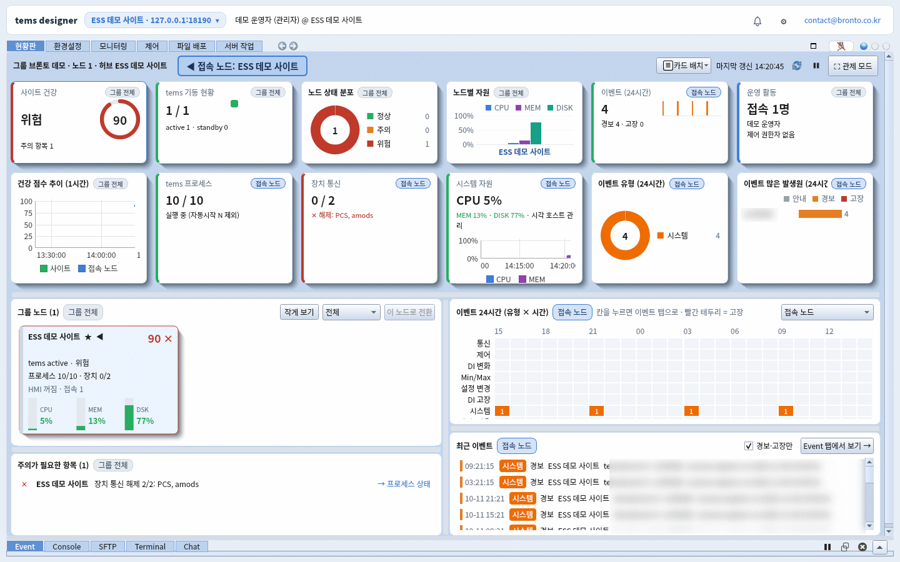
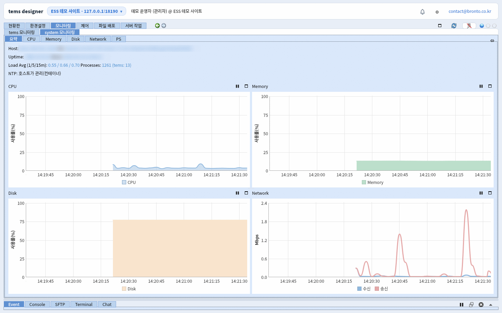
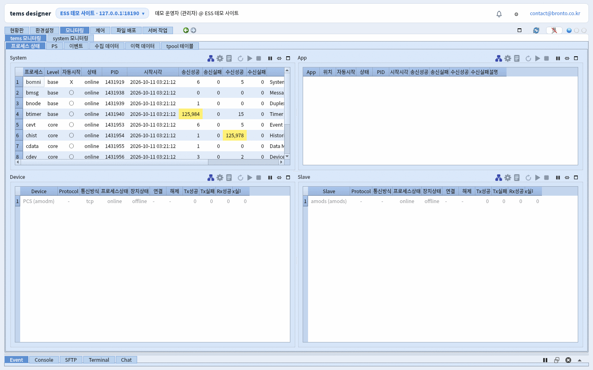
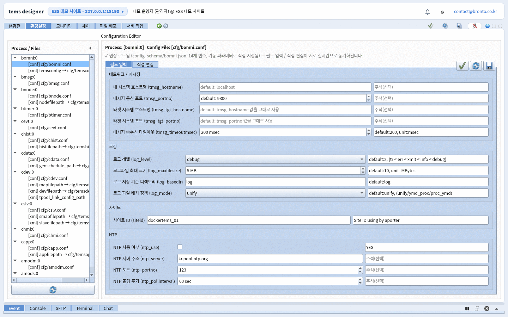
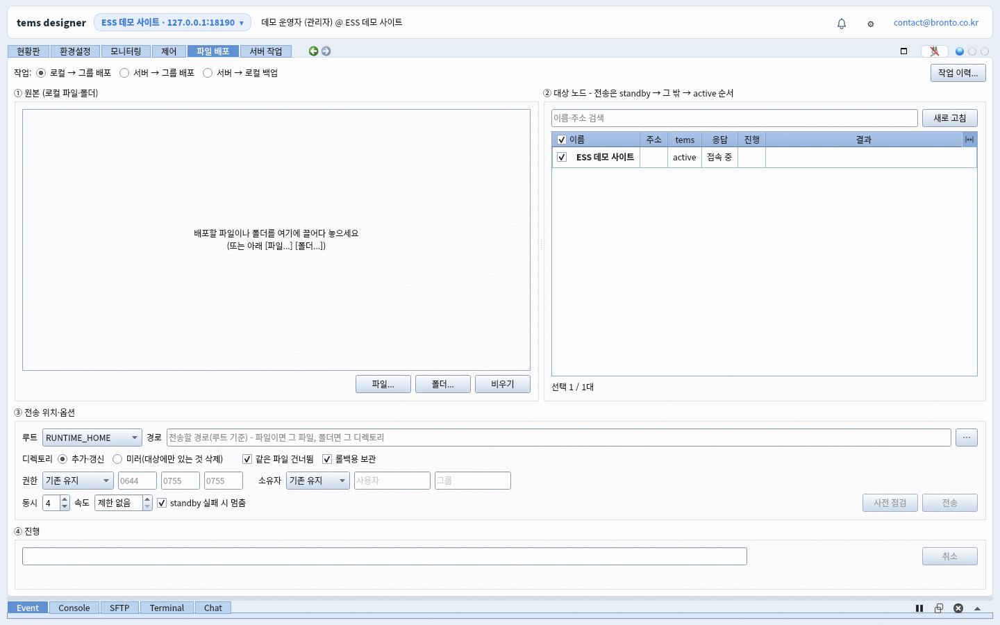
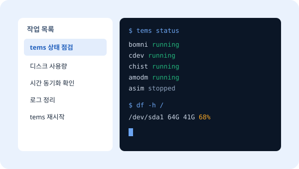
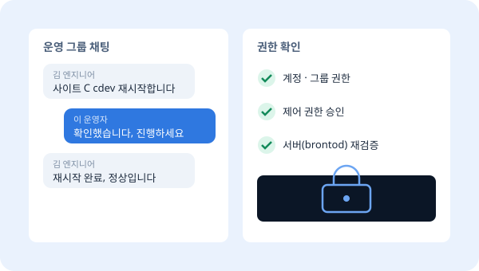

OPERATIONS
tOps
tems 서버를 원격으로 운영하는 도구.
여러 현장을 한 화면에서 감시하고, 현장에 가지 않고도 재시작 · 설정 변경 · 배포까지 처리합니다.
brontod · tems 서버에 설치되는 운영 데몬. 상태 수집과 명령 실행, 권한 검증을 맡습니다.
tdoctor · 운영자 PC의 관리 화면. 여러 brontod에 접속해 한곳에서 운영합니다.

FEATURES
운영자가 매일 하는 일을 한 프로그램에서
01
현황판 · 모니터링
접속한 모든 노드의 상태를 한 화면에 모으고, 주의가 필요한 항목을 먼저 보여줍니다. 항목에서 바로 해당 노드로 들어가 조치합니다.
- 노드별 정상 · 주의 · 장애 요약
- CPU · 메모리 · 디스크 · 프로세스 추이 그래프
- 서버별 색 테마로 현장 혼동 방지

02
프로세스 제어
tems의 각 프로세스 상태를 실시간으로 보고, 시작 · 중지 · 재시작을 원격에서 실행합니다.
- 프로세스별 실행 상태 · 자원 사용량
- 시작 · 중지 · 재시작 원격 실행
- 제어 권한 요청 · 승인으로 동시 조작 방지

03
검증되는 설정 편집
tems 설정 파일을 텍스트로 직접 고치지 않고, 항목별 설명과 허용 범위가 붙은 화면에서 편집합니다. 잘못된 값은 저장 전에 막습니다.
- 프로세스별 설정 · XML 레코드를 표 형태로 편집
- 값 형식 · 범위 검증, 변경 내역 비교
- 필요하면 원문 직접 편집도 지원

04
파일 배포 · 백업 · 롤백
새 버전 파일을 여러 서버에 한 번에 배포하고, 배포 전 상태를 자동으로 보관합니다. 문제가 생기면 이전 상태로 되돌립니다.
- 다중 서버 일괄 배포
- 배포 전 자동 백업 · 롤백
- 보관 용량 한도 관리

05
원격 명령 · 작업 목록
자주 쓰는 점검 명령을 작업으로 등록해 두고, 서버를 골라 실행한 뒤 결과를 바로 확인합니다.
- 자주 쓰는 명령 작업 목록
- 서버 파일 원격 편집
- 관리자 작업은 별도 허용 시에만 실행

06
계정 · 그룹 · 팀 채팅
운영 팀원마다 계정을 두고 그룹 단위로 서버 접근을 나눕니다. 같은 서버를 보는 팀원끼리 바로 대화합니다.
- 계정 · 그룹별 접근 권한
- 위험한 명령은 서버(brontod)에서 한 번 더 검증
- 그룹 채팅으로 조치 내용 공유

ROADMAP
곧, 휴대폰에서도
현황판과 모니터링을 휴대폰에서 확인하는 Android 앱을 준비하고 있습니다. 이동 중에도 현장 상태를 놓치지 마세요.
PC · tdoctor
Windows · Linux 운영자 PC에서 전체 기능을 사용합니다.
서버 · brontod
tems가 동작하는 x64 · ARM64 Linux 서버에 설치합니다.
모바일 · 준비 중
Android 앱으로 현황 확인과 알림 중심 기능을 제공할 예정입니다.
PACKAGE
단독으로, 또는 tems와 함께
tOps 단독
- 이미 tems 서버를 운영 중인 경우
- 여러 현장의 운영 업무를 한곳으로 모을 때
- 현장 방문 없이 장애에 대응하고 싶을 때